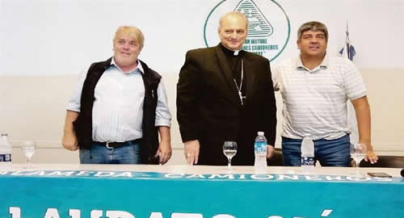

Real Chubut - Agencia de Noticias


El plan del Vaticano y Moyano para “laudatizar” la Argentina

• CUMBRE ENTRE REPRESENTANTE PAPAL Y LÍDER CAMIONERO IMPULSÓ ESTRATEGIA OPOSITORA AL GOBIERNO
El enviado de Francisco se reunió el sábado con referentes moyanistas y organizaciones anti-trata. Con base en la encíclica Laudato Si´, proponen una agenda confrontativa, con paraguas pontificio.
No es la primera vez que se reúnen. Pero en esta oportunidad, el enviado papal Monseñor Marcelo Sánchez Sorondo, el dirigente camionero Pablo Moyano y el ex legislador y referente de La Alameda Gustavo Vera hicieron algo más que sacarse, una foto y charlar sobre la situación del país. El pasado sábado 3 de marzo coincidieron en una actividad convocada por la organización anti-trata y el sindicato bajo la consigna "Los desafíos de la encíclica Laudato Si´ a la que asistieron un centenar de militantes gremiales y sociales y en la que sentaron las bases de una "propuesta programática" para extender los postulados papales a los municipios, los sindicatos y la propia estructura eclesiástica.
El plan trazado por el grupo de acción política que responde directamente al Vaticano, consiste en "expandir la base doctrinaria de Francisco, conjugando la fe y la razón reivindicada por la comunidad científica, por la izquierda, por el peronismo en el proyecto nacional, la doctrina social de la iglesia, todas las religiones que apoyan su lucha contra la nuevas formas de esclavitud y el cuidado de la casa común y hasta por Naciones Unidas", sostiene uno de los integrantes del equipo.
Durante el encuentro, el titular de la Academia de Ciencias del Vaticano reivindicó el modelo económico de China "que en los últimos años creó 400 millones de puestos de trabajo decente" y llamó a los trabajadores a "aguantar, resistir, luchar por la propia dignidad". En el cierre, Sánchez Sorondo instó a los presentes a emular "la resistencia del pueblo polaco en tiempos de Lech Walesa, como forma de no rendirse ante el capitalismo salvaje". Desde la óptica de los asistentes a la cumbre, la "laudatización" se hizo extensiva a la jerarquía eclesiástica, ya que uno de los obispos más alineados con la encíclica es el segundo de la Conferencia Episcopal, Marcelo Colombo el más joven de la comisión ejecutiva.
Pero el proceso no se agota ahí. Para los referentes de La Alameda, el PJ bonaerense también se "laudatizo". Y ponen como ejemplo de la transformación vaticana a Fernando Gray, intendente de Esteban Echeverría y segundo del partido a nivel provincial, que realizó en su localidad un congreso anti mafia con bendición papal y profundizó la lucha contra las organizaciones criminales colocando buzones para recibir denuncias de vecinos sobre narcos, prostíbulos o trata laboral.
El otro campo colonizado por la influencia papal es la Justicia. El "laudatismo judicial" tuvo su expresión formal en los dos coloquios realizados en la Casina Pío IV con presencia de jueces y fiscales federales argentinos. La causa más notoria fue la impugnación de la minera Barrick Gold en el expediente por contaminación de los ríos iniciado en la localidad sanjuanina de Jachal, donde la empresa adujo que el juez Sebastián Casanello no podía citar la Laudato Si´ como argumento.
Moyano y Vera, dos aliados
"En noviembre fuimos con una delegación de recolectores y barrenderos y le dijimos al Papa que íbamos contra la reforma laboral y cumplimos. Esa misma noche nos recibió en el Vaticano monseñor Sánchez Sorondo y nos permitió expresar nuestra preocupación por la situación de los trabajadores argentinos y por eso lo consideramos un aliado en nuestra pelea contra los sectores que quieren perjudicarnos", aseguró el secretario gremial de la Confederación General del Trabajo (CGT)
Por su parte, Vera sostuvo que la encíclica "es un verdadero programa político y de vida para evitar el suicidio de la humanidad" y explicó las coincidencias de Laudato Si´ con "la doctrina social de la Iglesia y el proyecto nacional de Juan Domingo Perón".
El hombre del Papa
Sánchez Sorondo viene de compartir el retiro espiritual de Francisco con la curia. Es el segundo año consecutivo que se sientan uno al lado del otro en estas jornadas de oración y reflexión. Este monseñor argentino es un histórico en el Vaticano. En 1971 se instaló en la Santa Sede y nunca más volvió a residir en la Argentina. Fue amigo y capellán personal de Juan Pablo II. Al cumplir 75 años presentó su renuncia pero el Papa Francisco no se la aceptó y lo ratificó por cinco años en el cargo de canciller en la Academia Pontificia de Ciencias. Siempre cuenta que el Papa jesuita y argentino le ordenó ocuparse de las nuevas formas de esclavitud y ahí es que comenzó su vínculo con la Alameda, más precisamente con Gustavo Vera, quien ostenta un vínculo amistoso con Francisco de los tiempos que era Arzobispo de Buenos Aires. "La Argentina tiene que llevar la bandera del Papa y quien la lleva en estos momentos son los movimientos sindicales", aseguró en declaraciones a Ámbito Financiero.
Fuente: Ambito